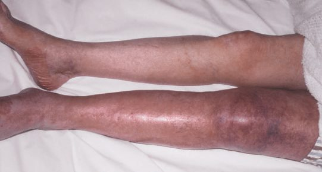
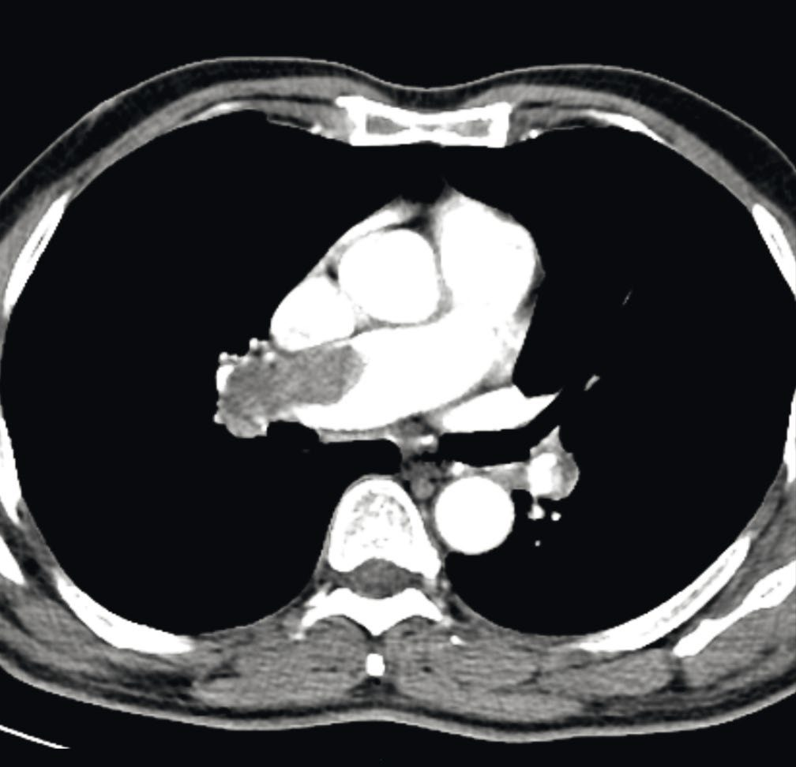
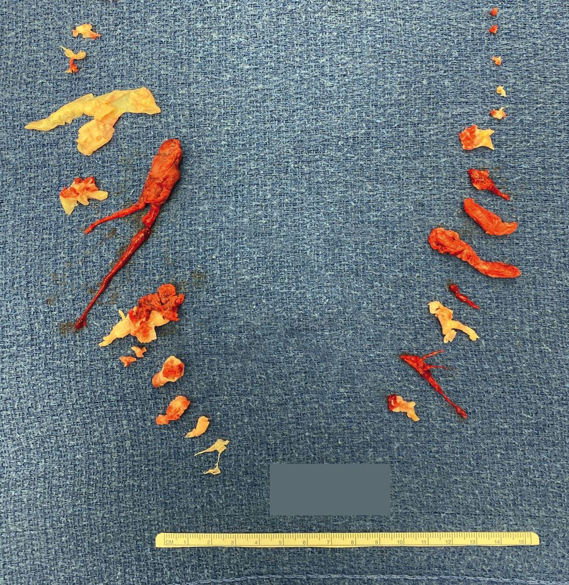
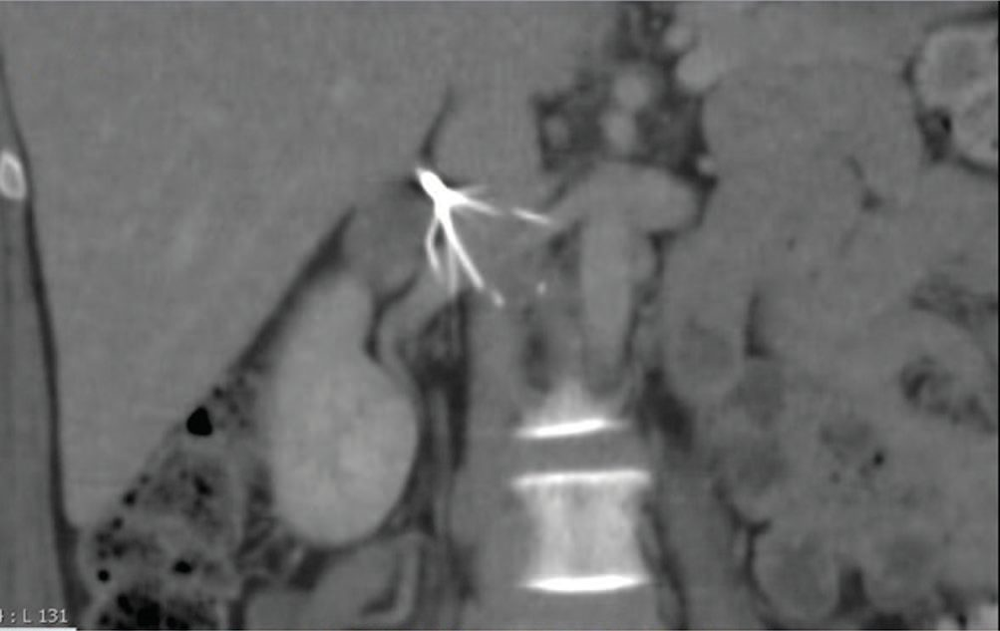

Venous Thromboembolism and DVT
Summary
- Venous thromboembolism (VTE) encompasses deep vein thrombosis (DVT) and pulmonary embolism (PE); DVT describes a blood clot in the deep venous system that can detach and embolise to the pulmonary vasculature, causing mechanical obstruction, pulmonary hypertension and acute right ventricular strain [1].
- VTE incidence is approximately 100 per 100,000 people per year, with an estimated 600,000 cases annually in the United States, and death occurs in 6% of DVT and 12% of PE cases within one month of diagnosis [2].
- All hospitalised surgical patients should be risk-stratified for VTE, and prophylaxis, diagnosis (duplex ultrasound for DVT, CT pulmonary angiography for PE) and anticoagulant treatment are central to management [3][4].
Definition
- DVT is thrombus formation within the deep venous system of the upper or lower extremities; PE occurs when a thrombus embolises through the venous system to lodge in the pulmonary vasculature [1].
- Massive PE is defined as PE resulting in haemodynamic compromise or where more than 30% of the pulmonary vasculature is compromised [4].
- Phlegmasia alba dolens is a painful, swollen, pale ("white") leg from extensive thrombosis with fluid sequestration and arterial insufficiency due to elevated compartment pressures; phlegmasia cerulea dolens is a painful, swollen, blue leg extending to the buttocks, extensive DVT of the major axial deep venous channels with relative sparing of collateral veins, causing pain, pitting oedema and cyanosis, and is more severe, potentially progressing to venous gangrene [2][5].
Pathophysiology
- Virchow's triad (stasis, endothelial (venous wall) injury, and hypercoagulability) underlies venous thrombosis, in contrast to arterial thrombosis, in which endothelial injury is the key element [5].
- Relative hypercoagulability appears most important in spontaneous ("idiopathic") VTE, whereas stasis and endothelial damage play a greater role in secondary ("provoked") VTE associated with transient risk factors such as immobilisation, surgery and trauma [2].
- DVT most commonly begins in the soleal sinusoids and venae comitantes of the calf before extending proximally into the popliteal, femoral, iliac veins and even the vena cava [6].
- Newly formed thrombi are not firmly attached to the vessel wall and can detach and embolise; once in the pulmonary circulation, emboli are coated with fibrin and platelets, causing mechanical obstruction of pulmonary blood flow [1].
- Anatomical factors can predispose to DVT: May-Thurner syndrome is chronic narrowing of the left common iliac vein at the point where the right common iliac artery crosses over it, predisposing to iliofemoral venous thrombosis [2].
- The left leg is affected roughly twice as often as the right, attributed to compression of the longer left iliac vein by the right iliac artery [5].
Clinical features
- Clinical manifestations of DVT may be entirely absent; when present, features include calf/leg pain, swelling, warmth, erythema, engorged superficial veins, and occasionally mild fever and tachycardia from inflammatory mediator release [3][7].
- Homans' sign (calf pain on dorsiflexion of the foot) is neither sensitive nor specific and should not be relied upon or even performed [3][7].
- The extent of swelling correlates with the level of thrombosis: calf DVT causes minimal swelling, femoral DVT causes ankle and calf swelling, and iliofemoral DVT causes swelling of the entire leg [5].
- In acute PE, the most common symptom is dyspnoea; other features include anxiety, cough, pleuritic or dull chest pain, haemoptysis, and syncope, with examination showing tachycardia, low-grade fever, a loud P2, or poor perfusion; massive PE can cause severe hypotension, unconsciousness, or cardiac arrest [1].
- PE is misdiagnosed in almost 75% of patients, with differentials including acute MI, aortic dissection, septic shock, chest infection, haemothorax, and pneumothorax [4].
- Roughly one-third of symptomatic VTE patients present with PE and two-thirds with DVT [2].

Etiology
- Acquired VTE risk factors include age over 40, hospitalisation/immobilisation, hormone replacement therapy or oral contraceptive use, pregnancy and the postpartum state, prior VTE, malignancy, major surgery, obesity, nephrotic syndrome, trauma and spinal cord injury, long-haul travel (>6 hours), varicose veins, antiphospholipid syndrome, myeloproliferative disorders, and polycythaemia [2].
- Heritable risk factors include male sex, factor V Leiden mutation, prothrombin 20210A gene variant, and antithrombin, protein C, or protein S deficiency; mixed heritable/acquired causes include hyperhomocysteinaemia and elevated factors VII, VIII, IX and XI [2].
- DVT may arise from vein compression or stasis (immobility, trauma, mass, surgery, paralysis, long-distance travel), inherited hypercoagulability (factor V Leiden, protein C, protein S, antithrombin deficiency), or acquired hypercoagulability (surgery, malignancy, polycythaemia, smoking, hormone replacement therapy, oral contraceptives, dehydration) [7].
- Migratory thrombophlebitis (Trousseau's sign) is classically associated with pancreatic carcinoma [9].
- Without prophylaxis, 30% of patients over age 40 undergoing major surgery will develop DVT, and 0.1–0.2% will die of pulmonary thromboembolism [4].
- About 50% of patients with phlegmasia cerulea dolens have an underlying malignancy [5].
Diagnosis
- Duplex ultrasound is the investigation of choice for DVT, visualising anatomy, extent of thrombosis, and relying on flow and vein compressibility, though it is operator-dependent and has lower sensitivity for isolated calf DVT [1][7].
- Duplex findings in DVT include cross-sectional vein incompressibility, direct visualisation of thrombus with vein enlargement, abnormal spectral Doppler, and abnormal colour Doppler flow [1].
- D-dimer is often raised postoperatively and is of limited value in that context; a negative d-dimer makes DVT/PE unlikely but the scoring systems and d-dimer are sensitive, not specific, screening tools, so VTE diagnosis should not rest on these alone [1][4].
- The two-level DVT Wells score stratifies patients into "DVT likely" (≥2 points) versus "DVT unlikely" (≤1 point) [3].
- CT or MR venography is more sensitive but reserved for special cases, e.g. suspected iliac vein/IVC thrombus or planning endovenous intervention [4].
- For PE, CT pulmonary angiography (CTPA) is the gold-standard, first-line test; ventilation/perfusion (V/Q) scanning is used if CTPA is contraindicated (e.g. pregnancy); transthoracic echocardiography (TTE) assesses right ventricular function [1][4].

Scoring and Severity
- The two-level DVT Wells score and two-level PE Wells score categorise patients into likely/unlikely groups to guide further testing [1][3].
- Surgical procedures are stratified by DVT risk: low risk (maxillofacial, neurosurgery, cardiothoracic surgery), medium risk (inguinal hernia repair, abdominal, gynaecological, urological surgery), and high risk (pelvic elective/trauma surgery, total knee/hip replacement) [3].
- Patients with hypotension, right ventricular failure on echocardiography/CT, elevated cardiac biomarkers, and a PE severity index (PESI) class III or higher are considered high risk for PE-related mortality [1].
- The 30-day mortality of acute massive PE is about 50% (40% within the first 2 hours); operative mortality for stable patients undergoing intervention is about 30%, rising to up to 70% for those requiring CPR or mechanical circulatory support preoperatively [4].
Treatment and Management
- Prophylaxis (compression stockings, calf pumps, pharmacological agents such as low-molecular-weight heparin [LMWH]) is guided by risk assessment performed within 24 hours of admission; compression stockings are avoided in patients with suspected/proven peripheral arterial disease, neuropathy, sensitive/broken skin, severe leg oedema, or leg deformity [3].
- Prophylaxis modalities include LMWH, unfractionated heparin (UFH), fondaparinux, and mechanical methods (intermittent pneumatic compression, foot pumps, graduated compression stockings); high-bleeding-risk patients (active GI bleeding, intracranial haemorrhage, liver disease, bleeding disorder, thrombocytopenia, recent head trauma, spinal injury/surgery) require careful risk-benefit assessment before pharmacological prophylaxis [1].
- Therapeutic LMWH or fondaparinux is the initial treatment of choice for confirmed DVT; UFH infusion (titrated to APTT) is preferred in severe renal impairment (eGFR <30) or high bleeding risk [4].
- Long-term anticoagulation is with a vitamin K antagonist (warfarin) or a direct oral anticoagulant for at least 3–6 months; duration recommendations are 3 months for a first-time calf DVT or a provoked DVT/PE (e.g. postoperative), versus lifetime anticoagulation for a second calf DVT, unprovoked proximal DVT/PE, active cancer (until cured), or a hypercoagulable state [4][5].
- The American College of Chest Physicians recommends 3 months of antithrombotic therapy after a provoked DVT [2].
- Catheter-directed thrombolysis may be considered for selected iliofemoral DVT; absolute contraindications to thrombolysis include prior ischaemic or haemorrhagic stroke within 3 months, head trauma within 3 months, neurosurgery within 6 months, known intracranial neoplasm, internal bleeding within 6 weeks, active bleeding disorder, traumatic CPR within 3 weeks, or suspected aortic dissection [2][4].
- For suspected PE with high clinical suspicion, heparin should be given without waiting for CT confirmation unless contraindicated [11].
- Haemodynamically unstable PE requires definitive thrombolysis (if no contraindications), with supportive measures, sitting up, 100% oxygen, possible intubation, vasopressors (norepinephrine/Levophed) with cautious fluids to avoid worsening right heart failure, ICU care, and consideration of fibrinolytics (streptokinase, urokinase, rTPA), catheter-directed therapy, surgical embolectomy, or ECMO as a bridge to embolectomy [1][4].
- Most PE cases are haemodynamically stable and managed like DVT, with anticoagulation transitioned to long-term therapy for about 6 months; routine fibrinolytics are reserved for unstable patients deteriorating despite anticoagulation, as the risk generally outweighs benefit in stable disease [1].
- Anticoagulation should continue in patients with a vena cava filter, as duration is determined by the underlying VTE, not the filter [2].
Surgeries
- IVC filters (percutaneously inserted via jugular or femoral vein into the infrarenal IVC, below the renal veins) are indicated for contraindication to anticoagulation, PE occurring despite adequate anticoagulation, recurrent PE, free-floating iliofemoral/deep femoral DVT (controversial), and recent pulmonary embolectomy [5][7].
- Routine IVC filter placement in proximal DVT has not been shown to prolong early or late survival, though it decreases PE rate (hazard ratio 0.22), at the cost of an increased rate of recurrent DVT (hazard ratio 1.87); the rate of fatal filter-related complications is <0.12%, and FDA guidance recommends removal within 29–54 days of implantation once no longer needed [2].
- PE occurring with a filter already in place likely arises from the SVC/upper extremities, IVC above the filter, or gonadal veins [5].
- Emergent surgical (or catheter) thrombectomy is indicated for phlegmasia cerulea dolens with a threatened extremity (loss of sensation or motor function) [5].
- Thrombolysis or surgical thrombectomy is reserved for severe thrombosis with venous gangrene [7].
- Thrombolytic agents include urokinase (expensive), streptokinase (cheap but with systemic effects, anaphylaxis risk, and antibody resistance limiting repeat use), and recombinant tPA (powerful clot affinity, lower systemic effects, half-life under 6 minutes), typically administered via arterial catheter with simultaneous heparin, with regular clinical and coagulation monitoring given a rising complication rate after 24–36 hours of infusion [7].
- For venous thrombosis associated with a central line, the line should be removed if not needed, followed by heparin; if the access is important, systemic heparin or tPA down the line may be tried [5].
- Suppurative thrombophlebitis (pus within the vein, usually following peripheral IV cannulation, most commonly Staphylococcus aureus) requires resection of the entire affected vein if purulence or sepsis persists despite antibiotics [9].

Complications
- VTE is associated with increased postoperative morbidity and mortality [1].
- Death occurs in 6% of DVT and 12% of PE cases within one month of diagnosis [2].
- Post-VTE sequelae include pulmonary hypertension (about 4% incidence) and post-thrombotic syndrome (up to 30% incidence) [2].
- Extensive DVT can progress to phlegmasia alba dolens or phlegmasia cerulea dolens, both of which can be complicated by venous gangrene and the need for amputation [2].
- IVC filter complications include air embolism, arrhythmias, pneumothorax/haemothorax, IVC obstruction, renal vein thrombosis, and filter migration, erosion, or fracture [7].
- Severe chronic venous insufficiency is often secondary to extensive or recurrent lower limb DVT (post-phlebitic limb), presenting with leg/ankle oedema, varicose eczema, pigmentation, lipodermatosclerosis, and venous ulceration [7].

Prognosis
- The incidence of VTE is approximately 100 per 100,000 people per year, with about 20% of diagnoses made within 3 months of a surgical procedure [2].
- Without prophylaxis, up to 30% of at-risk surgical patients over 40 develop DVT and 0.1–0.2% die of pulmonary thromboembolism [4].
- The 30-day mortality of acute massive PE is about 50%, with 40% of deaths occurring within the first 2 hours [4].
- A negative d-dimer test makes VTE unlikely, but patients should still be counselled on PE warning signs [3].
- Phlegmasia cerulea dolens carries a risk of venous gangrene and amputation, and about half of these patients have an underlying malignancy [2][5].
References
- Sabiston Textbook of Surgery, 22nd ed., Ch. 26 [Perioperative Management], Venous Thromboembolism
- Schwartz's Principles of Surgery: ABSITE and Board Review, Ch. 24 Venous and Lymphatic Disease
- Bailey & Love's Short Practice of Surgery, 28th ed., Ch. 24 Postoperative care
- Oxford Handbook of Clinical Surgery, 5th ed., Ch. 2, Deep vein thrombosis and pulmonary embolism
- The ABSITE Review 2022, Deep venous thrombosis
- Browse's Introduction to the Symptoms and Signs of Surgical Disease, 6th ed., Ch. 10 The arteries, veins and lymphatics
- Oxford Handbook of Clinical Surgery, 5th ed., Ch. 19 Peripheral vascular disease, Deep venous thrombosis
- Bailey & Love's Short Practice of Surgery, 28th ed., Ch. 62
- The ABSITE Review 2022, section on venous disease
- Sabiston Textbook of Surgery, 22nd ed., Ch. 114
- The ABSITE Review 2022, Pulmonary embolism [PE]